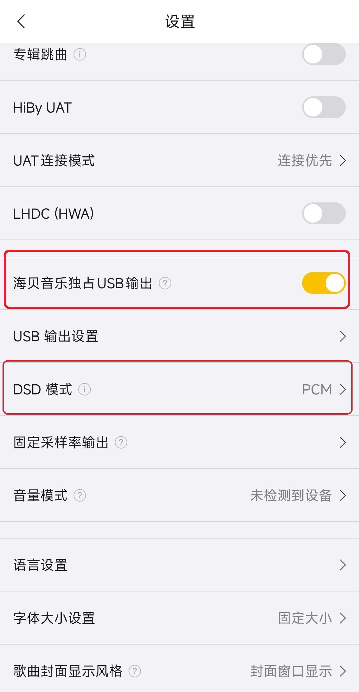
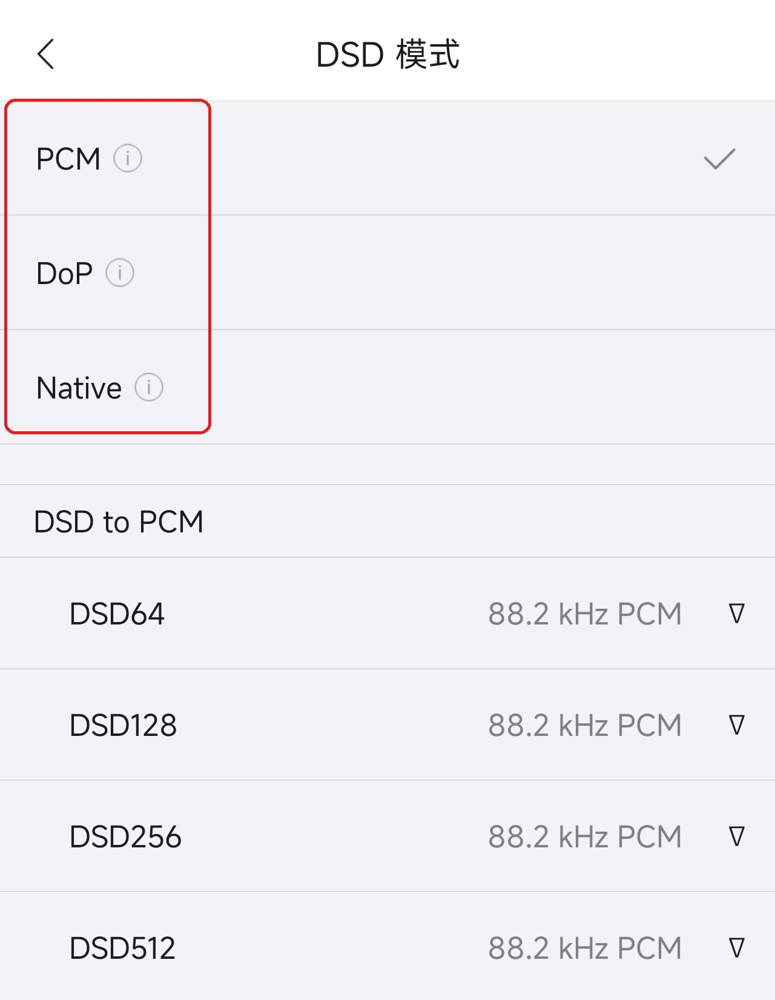
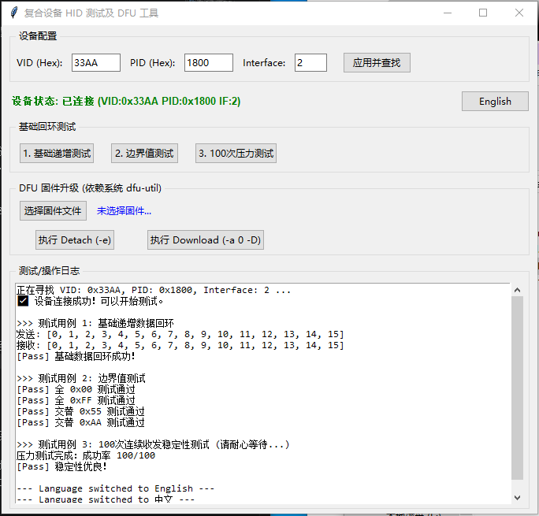
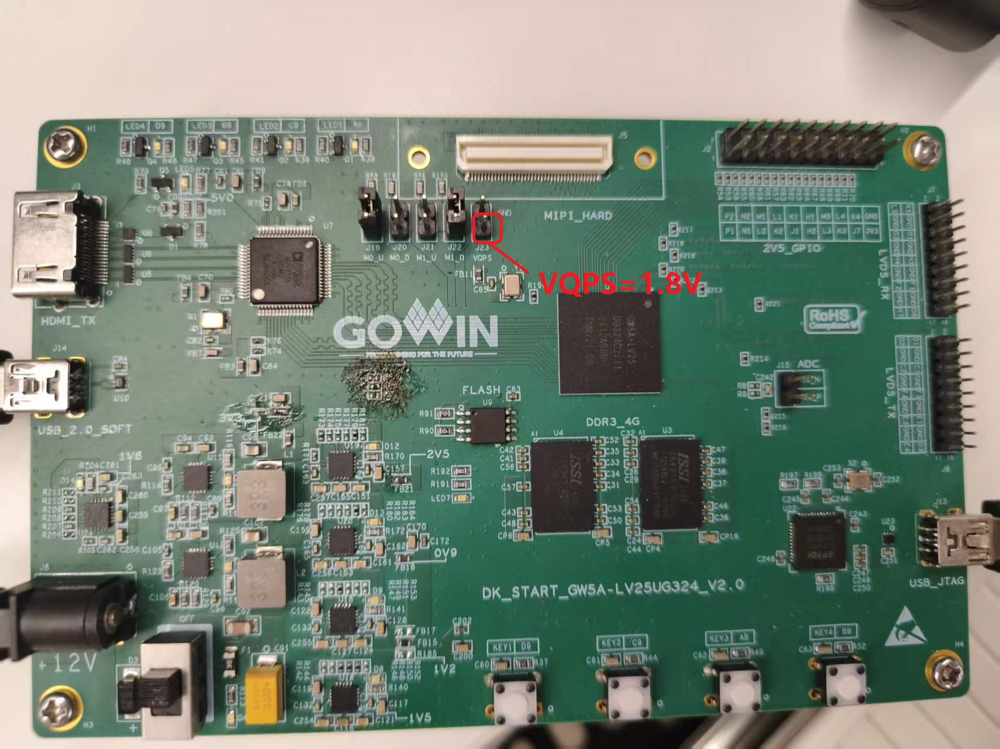
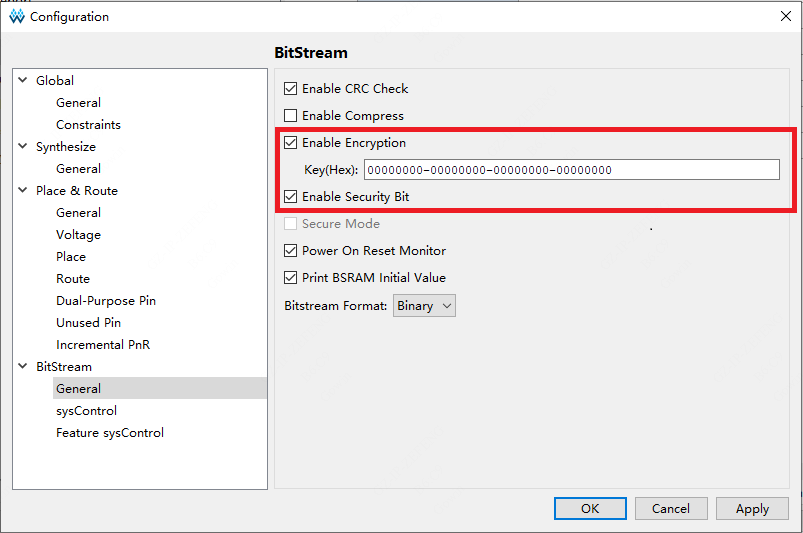
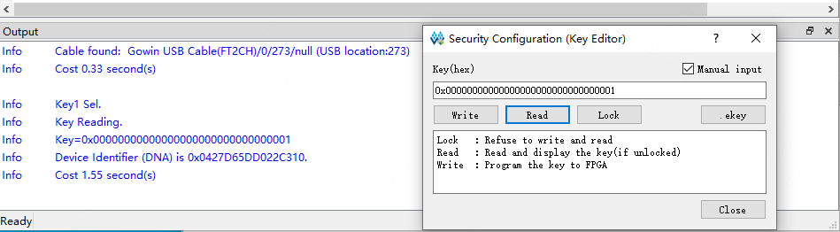
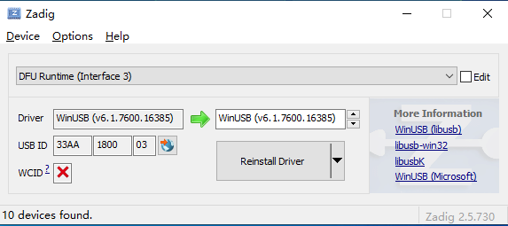
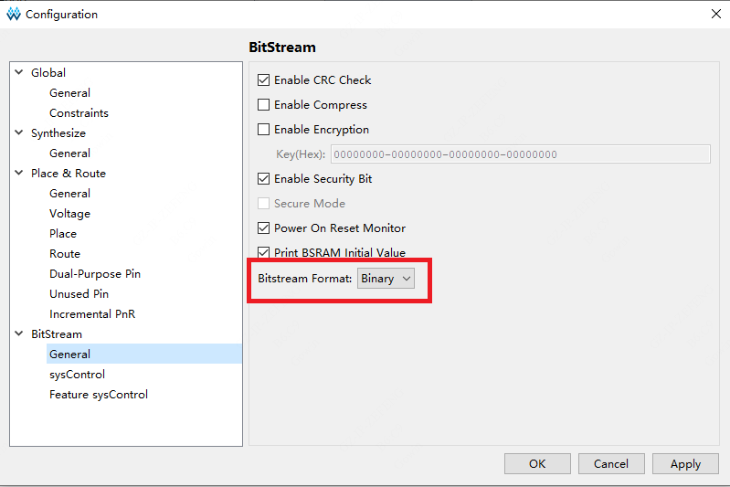
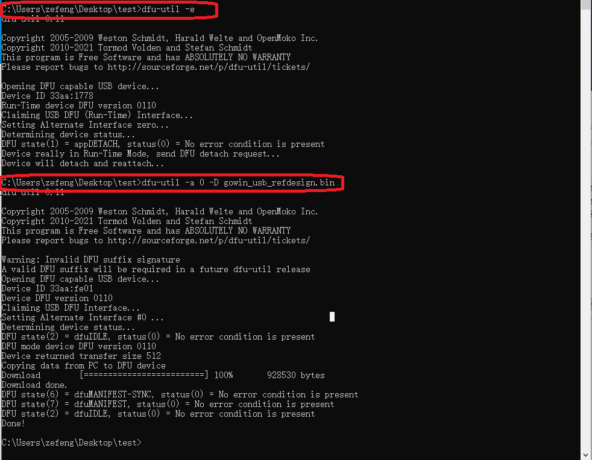

| 版本 | 日期 | 描述 | 作者 |
|---|---|---|---|
| V1.0 | 2026-07-27 | 初始版本，实现 UAC-HIFI 音频输出（支持 IIS/DSD/DoP）、HID 数据回环与 DFU 在线升级功能 | zefeng |
| V1.1 | 2026-08-04 | DFU 在线升级功能现已实现原生免驱支持，即连即用。 | zefeng |
本工程基于 FPGA 实现了一个 USB 2.0 高速复合设备，集成 UAC 2.0 Hi-Fi 音频播放设备、HID 人机接口设备 以及 DFU 在线背景升级 (Device Firmware Upgrade) 三个核心功能模块。
本工程需要在 DK_START_GW5A-LV25UG324_v2.0 开发板 上运行。
UAC 2.0 音频采用异步反馈模式，支持44.1khz~768khz采样率及16/24/32bit位深，可输出32bit并行PCM数据、IIS或DSD/DoP格式信号。
HID 子系统基于中断传输端点设计，当前版本仅预留回环测试功能。可根据用户实际需求定制。
DFU在线升级基于标准协议实现背景更新。为确保设备高可靠性与防“砖”能力，底层采用了 Multi-Boot 多重启动架构对 8MB 的 SPI Flash 空间进行了严格划分：
0x000000，作为 DFU 动态更新的目标区域；0x100000 (地址可自定义)，作为系统恢复的底层安全基线。系统顶层模块 Top 集成了动态时钟切换（DCS）、USB 物理层 (SoftPHY)、USB 协议层以及具体的业务子系统，实现了从 USB 接口到底层音频 IIS/DSD 物理引脚及 SPI Flash 的数据互通。
系统顶层 Top 暴露的物理引脚矩阵如下：
| 接口分类 | 信号引脚名称 | 方向 | 功能描述 |
|---|---|---|---|
| 系统控制 | CLK_IN |
Input | 基础系统时钟输入 |
LED |
Output | 复位完成指示灯（系统复位释放后常亮） | |
| USB 物理层 | usb_dxp_io / usb_dxn_io |
Inout | USB DP/DN 差分数据总线 |
usb_rxdp_i / usb_rxdn_i |
Input | USB 差分接收输入 | |
usb_pullup_en_o |
Output | USB D+ 1.5K 上拉电阻使能控制 | |
usb_term_dp_io / usb_term_dn_io |
Inout | USB 终端阻抗匹配引脚 | |
| SPI Flash | spi_sclk |
Output | SPI 总线时钟 (用于 DFU 烧录) |
spi_cs |
Output | SPI 片选信号 (低电平有效) | |
spi_mosi |
Output | SPI 主机输出/从机输入 (MOSI) 数据线 | |
spi_miso |
Input | SPI 主机输入/从机输出 (MISO) 数据线 | |
| IIS Serial | IIS_BCLK_O |
Output | IIS 串行位时钟输出 |
IIS_LRCK_O |
Output | IIS 左右声道帧时钟输出 | |
IIS_DATA1_O |
Output | IIS 音频串行数据输出 (CN01) | |
| DSD Serial | DSD_CLK_O |
Output | DSD 音频位时钟输出 |
DSD_DATA1_O |
Output | DSD 左声道串行数据输出 | |
DSD_DATA2_O |
Output | DSD 右声道串行数据输出 |
系统内部按逻辑域划分为以下五个主要子系统：各个模块之间通过基于 FIFO 的流水线传输进行数据交互。
Gowin_PLL_gen24：将输入主时钟倍频/分频生成 24MHz 系统基准工作时钟。Gowin_PLL_usb：核心 USB 时钟引擎，为 USB 物理层和控制器提供 dedicated 60MHz PHY 工作时钟 (PHY_CLKOUT) 及 960MHz 高频采样时钟 (fclk_960M)。Gowin_PLL_iis & Gowin_DCS：音频基准时钟源。iis_pll0 产生 49.152MHz (对应 48kHz 采样率家族) 与 45.1584MHz (对应 44.1kHz 采样率家族) 两路基准音频时钟。利用动态时钟选择模块 Gowin_DCS 根据主机下发的 sample_rate 自动无缝切换主音频时钟 xmclk。pll_locked)、内部计数器延时，以及 DFU 模式切换时的定时断开逻辑 (disconnect_timer)，实现安全的异步复位与同步释放，确保总线重枚举与上电稳态。USB2_0_SoftPHY_Top (USB 物理层)：在 FPGA 逻辑内部实现 USB 2.0 PHY 功能，直接驱动外部物理引脚，向协议层提供标准的 UTMI 接口。USB_Device_Controller_Top (USB 核心控制器)：处理底层 USB 通信协议，涵盖包组装与解析、CRC 校验、事务处理及端点 (Endpoint) 数据路由。usb_desc (设备描述符 ROM)：存放设备的枚举描述符信息（声明 VID: 0x33AA, PID: 0x1800），支持根据是否处于 DFU 模式 (i_dfu_mode) 动态切换配置描述符拓扑。usb_ep_top (端点管理器)：实现 USB 端点数据路由。本工程配置如下：
0x82)：HID 双向中断端点（采用流式 FIFO 缓存）。USB_EP0_ctrl (USB 特定类请求控制器)：解析 Setup 包，拦截并处理 UAC 特定类请求（采样率设置、静音、音量调节、DoP/DSD 模式使能），支持对 DoP 标记码（0x05/0xFA）进行自动识别解析，控制 dsd_en 与 dop_en 标记。同时拦截并处理 DFU 类的特定下载指令。本子系统负责接收 USB 端点 1 下发的音频数据，完成协议解包并转化为标准 IIS 或 DSD 信号：
IIS_CLK_GEN (IIS 时钟生成器)：基于当前采样率与数据位数，实时生成 dac_bclk 和 dac_lrclk。audio_tx_usb2pcm (扬声器32位并行PCM数据转化)：实现 USB 8 位并行数据流到 32 位并行 PCM 数据的重组转化。audio_tx_pcm2iis (扬声器 IIS 串行数据转化)：负责将 32 位并行 PCM 音频数据转换为标准的 IIS 串行总线时序信号 (BCLK, LRCK, DATA) 并输出至外部音频 DAC。audio_tx_pcm2dsd (PCM/DoP 到 DSD 串行转换)：当检测到 DSD/DoP 格式使能时，提取 DSD 源码数据流并重构为标准的双通道 DSD 串行时序 (DSD_CLK, DSD_DATA1, DSD_DATA2) 输出。speaker_feedback (异步反馈模块)：通过测量本地音频时钟（xmclk）相对 USB 帧起始信号（usb_sof）的周期数，动态计算 16.16 格式的反馈系数，通过 EP81 回传给主机，保证主机发包速率与本地消耗速率精准匹配。ep2_rx_data)，在 PHY_CLKOUT 时钟域下直接锁存打拍并送入 EP2 IN (ep2_tx_data)，实现数据传输验证。本子系统实现了一个基于 USB 官方 DFU 类的背景在线升级功能。
USB_EP0_ctrl (USB 特定类请求寄存器)：除常规控制请求外，负责拦截和解析 DFU 类特定请求（如 DFU_DNLOAD, DFU_GETSTATUS 等）。spi_flash_controller (SPI Flash 控制器)：逻辑内部包含地址偏移路由机制：当系统处于 DFU 模式 (is_dfu_mode 有效) 时，控制器会自动将上位机下发的固件数据流定向写入外部 Flash 的 0x000000 (工作位流) 区域。本工程采用高度参数化的设计，用户可通过修改各子系统顶层模块的 parameter 或内部常量，快速裁剪系统功能与存储容量：
audio_define.vh)| 宏定义参数 | 功能描述 |
|---|---|
HIFI_ONLY |
定义该宏时将禁用 HID 及 DFU 相关的 EP2 模块，仅保留 UAC Hi-Fi 播放功能。 |
HIFI_HID_DFU |
定义该宏时将包含全部复合功能，UAC Hi-Fi 播放、HID 回环及 DFU 升级功能。 |
usb_ep_top)该模块负责统筹所有端点的底层硬件资源与数据链路路由。系统采用灵活的参数化映射机制，通过独立配置以下映射表，可以为不同端点号 (Endpoint Number) 动态指派具体的业务场景以及最合适的缓存架构。
模式定义说明：
0: DISABLE (端点禁用)1: UMS (采用 Ping-Pong RAM，适用于高吞吐量的整包数据交互)2: CDC (采用纯 FIFO，适用于低延迟的 UART 流式透传)3: UAC (采用专用 Audio 缓存机制，适用于等时音频流)| 参数名称 | 当前配置值 | 功能描述 |
|---|---|---|
EP_OUT_MODE |
'{ 1:3, 2:2, default:0 } |
OUT 端点模式映射表。 定义主机到设备的下行数据流业务。当前配置： • EP1: 模式 3 (UAC 下行，服务于 Speaker 扬声器) • EP2: 模式 2 (HID OUT，服务于 HID 接收) |
EP_IN_MODE |
'{ 1:0, 2:2, default:0 } |
IN 端点模式映射表。 定义设备到主机的上行数据流业务。当前配置： • EP2: 模式 2 (HID 上行，服务于 HID 发送) |
EP_UAC_INTF |
'{ 1:1, default:0 } |
UAC 接口绑定映射表。 专用于 UAC 模式，将音频端点与具体的 USB 音频接口 (Interface) 编号绑定，以便正确解析主机下发的特定类请求。当前配置： • EP1 绑定至 Interface 1 |
usb_desc)| 参数名称 | 默认取值 | 功能描述 |
|---|---|---|
VENDORID |
16'h33AA |
厂商识别码 (VID) |
PRODUCTID |
16'h1800 |
产品识别码 (PID) |
VERSIONBCD |
16'h0100 |
产品固件版本号 (BCD 格式，此处代表 V1.00) |
IIS_BCLK_O, IIS_LRCK_O, IIS_DATA1_O 以及 DSD_CLK_O, DSD_DATA1_O, DSD_DATA2_O 测试引脚，也可外接 DAC 解码板。
33AA, PID: 1800)。IIS_BCLK_O, IIS_LRCK_O 与 IIS_DATA1_O。确认 LRCK 频率严格等于设定采样率（如 48kHz），BCLK 频率为对应位时钟，数据线正常输出 32 位位宽的 PCM 正弦波数据包。foo_input_sacd），输出模式设置为 DSD over PCM (DoP)。0x05 / 0xFA) 并拉高 dop_en / dsd_en。此时 PCM/IIS 输出切换为无声/静音，物理引脚 DSD_CLK_O 与 DSD_DATA1_O/DATA2_O 开始正确输出高频 DSD 位流。高采样率与特殊格式播放测试说明
海贝音乐 APP 配置步骤（参考下图）：
 |
 |
| 图1：步骤一示意图 | 图2：步骤二示意图 |
HID 子系统配置为中断端点 (Endpoint 2)，在 FPGA 内部实现了纯逻辑锁存数据回环。
33AA:1800:2），点击应用并查找。显示 "设备状态：已连接"，则说明设备已成功链接。该软件包含三种简单的回环测试。
[0, 1, 2, ..., 15]），并等待设备将其原样返回，以确保基础通信链路畅通无阻。0x000xFF0x55 (即二进制 01010101)0xAA (即二进制 10101010)
本系统采用 Multi-Boot 多重启动架构，为了实现安全的远程升级与数据隔离，系统将外部 GD25Q64ESIG SPI Flash (8MB) 的物理地址进行了如下映射：
0x000000：工作位流 (Working Image)，DFU 协议的默认下载与擦写目标地址。0x100000：黄金位流 (Golden Image)，出厂固化的安全备份区域。该地址可以自定义。0 修改为 1 将永远无法恢复）。操作前请务必仔细核对！

黄金位流地址设定：
0x800_000，但实际上默认地址为 0x000_000。0x100_000），点击“Write”按钮。若提示“Write Success”，则表示写入成功。
AES 密钥设定：
Arora V 家族 FPGA 产品支持比特流数据加密，采用 128bit 的 AES 加密算法。用户可以在编译时加入 AES 密钥。器件上电后将会识别含有预设 AES 密钥的加密位流以及未加密的位流，并自动跳过 AES 密钥不匹配的加密位流。


更具体的说明可见《UG714-Arora V 25K FPGA Products Programming and Configuration Guide》 —— 4.3 Security
为了保证防砖机制能够正常介入，在交付前或首次测试前，需先通过硬件下载器将稳定版本的 golden_DFU_V1.0.fs 固件烧录至黄金地址。
External Flash Mode Arora V。0x100000。0x000000。✅ 当前 DFU 升级功能已实现免驱支持，设备连接后 Windows 系统将自动加载驱动，无需额外配置，即连即用。
注：若使用早期固件版本（V1.0）或遇到自动识别异常时，可参考以下手动驱动配置步骤：
Options → List All Devices，确保工具能读取当前所有的 USB 物理设备。
本节主要验证通过 DFU (Device Firmware Upgrade) 接口向开发板外部的 SPI Flash 写入新固件的功能。测试提供了两种可选方式：使用图形化配套软件，或使用开源命令行工具 dfu-util。
本次测试使用配套 tools 文件夹中的 HID+DFU测试软件.exe 向开发板写入新固件。
测试环境与注意事项
dfu-util.exe 以及 libusb-1.0.dll 位于同一文件夹目录下，或者已将 dfu-util 的路径成功添加至系统环境变量中，否则将导致下载功能无法调用。升级操作步骤
.bin 固件文件。.bin 文件下载至开发板的 spi_flash 中。此时，下方的输出窗口会实时显示实际的下载进度。
测试固件说明
附件的 DFU_bin 文件夹中提供了以下几个固件供测试使用：
5A25_HIFI+HID+DFU_V1.1.bin —— 本工程完整固件V1.1版本，DFU部分免驱。5A25_HIFI+HID+DFU_V1.0.bin —— 本工程完整固件V1.0版本，DFU需要单独安装驱动·。5A25_HIFIonly_V1.0.bin —— 本工程裁剪固件，仅包含 UAC-HIFI 功能。mode_2CN_V1.4.0.bin —— 测试固件，包含 DFU 功能。mode_8CN_V1.4.0.bin —— 测试固件，包含 DFU 功能。5A25_HIFIonly_V1.0.bin 之外，其余四个固件均保留了 DFU 升级功能。这意味着在烧录这三个固件并重新上电后，您依然可以继续使用该软件进行下一次的固件烧录。如果烧录了 HIFIonly 固件，重新上电后设备将不再响应后续的 DFU 升级请求。
您也可以使用跨平台的开源命令行工具 dfu-util 进行测试。请确保已将 dfu-util 添加至系统的环境变量中。
步骤 1：准备固件位流文件
在工程综合工具中，右键打开 Configuration —— BitStream —— General —— Bitstream Format，选择 Binary。编译完成后，软件会在 pnr 文件夹中生成对应的 .fs、.bin 以及 .binx 固件文件。准备好需要更新的 .bin 文件（例如命名为 update_v2.bin）。

步骤 2：枚举并识别设备
打开命令行终端 (CMD / PowerShell)，输入以下命令检查设备是否被正确识别：
dfu-util -l若驱动正常，终端将列出当前支持 DFU 的设备，并显示对应的 VID 与 PID（如 33AA:1800）。
步骤 3：下发新固件
在终端中执行以下命令，触发设备从 APP 模式切换至 DFU 下载模式：
dfu-util -e随后，执行以下命令发起下载：
dfu-util -d 33AA:1800 -a 0 -D update_v2.bin参数说明：
-d 33AA:1800：指定目标设备的 VID:PID。-a 0：指定更新目标为 Alt Setting 0，底层逻辑会自动映射至 Flash 的 0x000000 地址。-D：指令为 Download（下载指定固件至设备）。
步骤 4：背景升级监控与状态说明
执行下载命令后，终端会出现下载进度条。此时，USB 控制器接收数据流，并驱动 SPI Flash 控制器对 0x000000 区域执行擦写操作。
0x000000 加载新固件。
步骤 5：复位与多重启动验证 (防砖测试)
0x000000 失败时，会自动触发多重启动机制，回退并加载位于 0x100000 备份地址的黄金位流 (Golden Image)。系统依靠黄金位流成功启动后，您可以重新使用 DFU 对 0x000000 地址覆盖下载正确的位流文件，以此验证设备的自恢复能力。